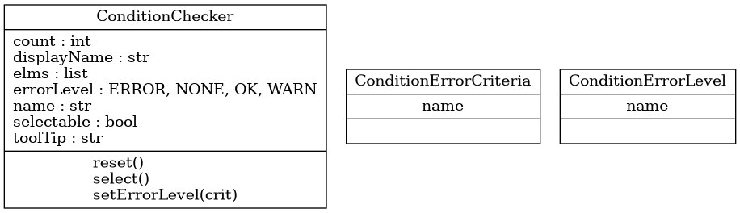

tlc.common.conditionchecker.ConditionChecker
{kind=link}
- class tlc.common.conditionchecker.ConditionChecker(name='', displayName='', toolTip='', selectable=True)
Bases:
objectClass ConditionChecker
- __init__(name='', displayName='', toolTip='', selectable=True)
Constructor
- Parameters:
name (str, optional) – Short name (ID, key) of the condition. Defaults to “”.
displayName (str, optional) – Condition name used to display on UI. Defaults to “”.
toolTip (str, optional) – Long description used as a tooltip. Defaults to “”.
selectable (bool, optional) – Condition elements are selectable. Defaults to True.
Methods
__init__([name, displayName, toolTip, ...])Constructor
reset()Reset counter and selection list
select()Select components that matched the condition
setErrorLevel(crit)Set error level following the criteria supplied
Attributes
Condition name (short name used as an ID)
Condition name to be displayed in the UI
Text to be showed as a tooltip for this condition
The elements matching the condition can be selected
Number of components matching the condition
Error level
List of elements matching the condition
- count
Number of components matching the condition
- displayName
Condition name to be displayed in the UI
- elms
List of elements matching the condition
- errorLevel
Error level
- name
Condition name (short name used as an ID)
- reset()
Reset counter and selection list
- select()
Select components that matched the condition
- selectable
The elements matching the condition can be selected
- setErrorLevel(crit)
Set error level following the criteria supplied
- Parameters:
crit (ConditionErrorCriteria) – Condition error criteria
- toolTip
Text to be showed as a tooltip for this condition